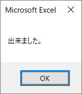
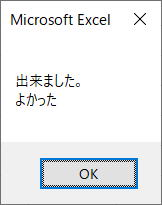
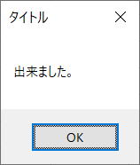
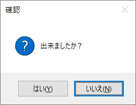

MsgBox関数
MsgBox関数は、ダイアログ ボックスにメッセージを表示し、
ボタンがクリックされるのを待って、ユーザーがどのボタンをクリックされたのかを示す整数を返します。
MsgBox関数の構文
引数の説明
| prompt |
必ず指定します。 ダイアログ ボックス内にメッセージとして表示する文字列を示す文字列式を指定します。 名前付き引数 prompt に指定できる最大文字数は、1 バイト文字で約 1,024 文字です。 ただし、使う文字の文字幅に依存します。 名前付き引数 prompt に複数行を指定する場合は、キャリッジ リターン (Chr(13))、ライン フィード (Chr(10))、またはキャリッジ リターンとライン フィードの組み合わせ (Chr(13) & Chr(10)) を改行する位置に挿入し、行を区切ってください。 |
| buttons | 省略可能です。 表示されるボタンの種類と個数、使用するアイコンのスタイル、標準ボタン、メッセージ ボックスがモーダルかどうかなどを表す値の合計値を示す数式を指定します。 省略すると、名前付き引数 buttons の既定値 0 になります。 |
| title | 省略可能です。 ダイアログ ボックスのタイトル バーに表示する文字列を示す文字列式を指定します。 名前付き引数 title を省略すると、タイトル バーにはアプリケーション名が表示されます。 |
| helpfile | 省略可能です。 ダイアログ ボックスに状況依存のヘルプを設定するために、使用するヘルプ ファイルの名前を示す文字列式を指定します。 この引数は、表示するダイアログ ボックスの説明をヘルプを使って表示するときに指定します。 名前付き引数 helpfile を指定した場合は、引数 context も指定する必要があります。 |
| context |
省略可能です。 ヘルプ トピックに指定したコンテキスト番号を表す数式を指定します。 名前付き引数 context を指定した場合は、引数 helpfile も指定する必要があります。 |
名前付き引数です。
名前付き引数とは、あらかじめ定義された名前を持つ引数。
名前付き引数を使用すると、構文どおりに指定された順序で各引数に値を指定しなくても、任意の順序で値を設定することができます。
※名前付き引数については、第25回.名前付き引数について
しかし、MsgBox関数では、名前付き引数を使わずに、順番通りに指定する事の方が多いでしょう。
buttonsの定数
| グループ | 定数 | 値 | 内容 |
| ボタンの種類 | vbOKOnly | 0 | [OK] ボタンのみを表示します。 |
| vbOKCancel | 1 | [OK] ボタンと [キャンセル] ボタンを表示します。 | |
| vbAbortRetryIgnore | 2 | [中止]、[再試行]、および [無視] の 3 つのボタンを表示します。 | |
| vbYesNoCancel | 3 | [はい]、[いいえ]、および [キャンセル] の 3 つのボタンを表示します。 | |
| vbYesNo | 4 | [はい] ボタンと [いいえ] ボタンを表示します。 | |
| vbRetryCancel | 5 | [再試行] ボタンと [キャンセル] ボタンを表示します。 | |
| アイコンの種類 | vbCritical | 16 | 警告メッセージ アイコンを表示します。 |
| vbQuestion | 32 | 問い合わせメッセージ アイコンを表示します。 | |
| vbExclamation | 48 | 注意メッセージ アイコンを表示します。 | |
| vbInformation | 64 | 情報メッセージ アイコンを表示します。 | |
| 標準ボタン | vbDefaultButton1 | 0 | 第 1 ボタンを標準ボタンにします。 |
| vbDefaultButton2 | 256 | 第 2 ボタンを標準ボタンにします。 | |
| vbDefaultButton3 | 512 | 第 3 ボタンを標準ボタンにします。 | |
| vbDefaultButton4 | 768 | 第 4 ボタンを標準ボタンにします。 | |
| その他 | vbApplicationModal | 0 | アプリケーション モーダルに設定します。メッセージ ボックスに応答するまで、現在選択中のアプリケーションの実行を継続できません。 |
| vbSystemModal | 4096 | システム モーダルに設定します。メッセージ ボックスに応答するまで、すべてのアプリケーションが中断されます。 | |
| vbMsgBoxHelpButton | 16384 | ヘルプ ボタンを追加します。 | |
| VbMsgBoxSetForeground | 65536 | 最前面のウィンドウとして表示します。 | |
| vbMsgBoxRight | 524288 | テキストを右寄せで表示します。 | |
| vbMsgBoxRtlReading | 1048576 | テキストを、右から左の方向で表示します。 |
その他は使用する必要はないでしょう。
メッセージ内容、ボタンの種類、アイコンの種類は、組み合わせを考慮しましょう。
戻り値の定数：VbMsgBoxResult列挙
| 定数 | 値 | 説明 |
| vbOK | 1 | [OK] |
| vbCancel | 2 | [キャンセル] |
| vbAbort | 3 | [中止] |
| vbRetry | 4 | [再試行] |
| vbIgnore | 5 | [無視] |
| vbYes | 6 | [はい] |
| vbNo | 7 | [いいえ] |
MsgBox関数の使用例
MsgBox "出来ました。"

「OK」ボタンだけが表示されます。
MsgBox "出来ました。" & vbLf & "よかった"

ライン フィード (Chr(10))は、VbLf
キャリッジ リターンとライン フィードの組み合わせ (Chr(13) & Chr(10)) は、VbCrLf
どれを使ってもこの場合は同じですが、VbLfで良いでしょう。
MsgBox "出来ました。", vbOKOnly, "タイトル"

タイトルの出方を確認して下さい。
Dim rtn As VbMsgBoxResult
rtn = MsgBox("出来ましたか？", vbYesNo + vbQuestion + vbDefaultButton2, "確認")
Select Case rtn '押されたボタンの確認
Case vbYes
MsgBox "「はい」が押されました。"
Case vbNo
MsgBox "「いいえ」が押されました。"
End Select

アイコンの種類を、問い合わせアイコン
標準ボタンを、2番目のボタン
押されたボタンを、戻り値で確認しています。
戻り値を取得する為、
= MsgBox
このように戻り値を受け取る場合は、引数を()括弧でくくります。
同じテーマ「VBA関数」の記事
Int関数
Oct関数
Rnd関数
Round関数
CreateObject関数
DoEvents関数
GetObject関数
InputBox関数
MsgBox関数
RGB関数
Shell関数
新着記事NEW ・・・新着記事一覧を見る
VBA100本ノック 100本目：WEBから100本ノックのリストを取得｜VBA練習問題（3月3日）
VBA100本ノック 99本目：自動席替え（行列と前後左右が全て違うように）｜VBA練習問題（3月2日）
VBA100本ノック 98本目：席替えルールが守られているか確認｜VBA練習問題（3月1日）
VBA100本ノック 97本目：Accessデータを取得（グループ集計）｜VBA練習問題（2月27日）
VBA100本ノック 96本目：Accessデータを取得（マスタ結合&抽出）｜VBA練習問題（2月26日）
VBA100本ノック 95本目：図形のテキストを検索するフォーム作成｜VBA練習問題（2月24日）
VBA100本ノック 94本目：表範囲からHTMLのtableタグを作成｜VBA練習問題（2月23日）
VBA100本ノック 93本目：複数ブックを連結して再分割｜VBA練習問題（2月22日）
VBA100本ノック 92本目：セルの色を16進で返す関数｜VBA練習問題（2月20日）
VBA100本ノック 91本目：時間計算（残業時間の月間合計）｜VBA練習問題（2月19日）
アクセスランキング ・・・ ランキング一覧を見る
1.最終行の取得（End,Rows.Count）｜VBA入門
2.RangeとCellsの使い方｜VBA入門
3.変数宣言のDimとデータ型｜VBA入門
4.マクロって何？VBAって何？｜VBA入門
5.Range以外の指定方法（Cells,Rows,Columns）｜VBA入門
6.セルのコピー&値の貼り付け（PasteSpecial）｜VBA入門
7.繰り返し処理（For Next)｜VBA入門
8.セルに文字を入れるとは（Range,Value）｜VBA入門
9.マクロはどこに書くの（VBEの起動）｜VBA入門
10.とにかく書いてみよう（Sub,End Sub）｜VBA入門
このサイトがお役に立ちましたら「シェア」「Bookmark」をお願いいたします。
記述には細心の注意をしたつもりですが、
間違いやご指摘がありましたら、「お問い合わせ」からお知らせいただけると幸いです。
掲載のVBAコードは動作を保証するものではなく、あくまでVBA学習のサンプルとして掲載しています。
掲載のVBAコードは自己責任でご使用ください。万一データ破損等の損害が発生しても責任は負いません。